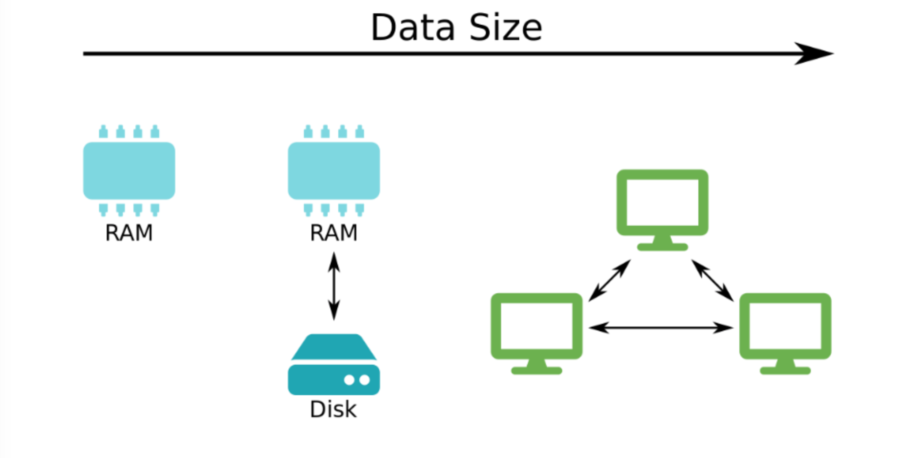
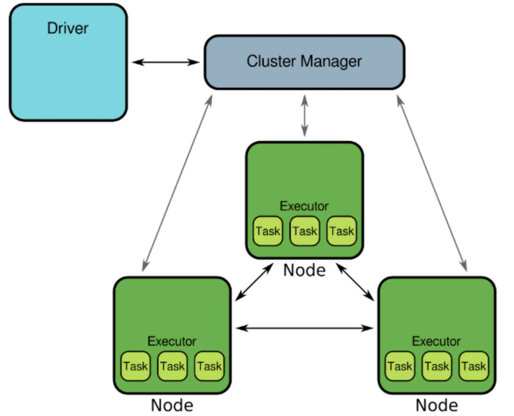

Code
import pyspark
import numpy as np
import pandas as pdkakamana
April 9, 2023
Spark is a framework for working with large amounts of data. The purpose of this chapter is to provide some background information on Spark and Machine Learning. Afterward, you will learn how to connect to Spark using Python and load CSV data into it.
This Introduction is part of Datacamp course: Machine Learning with PySpark Spark is a powerful, general-purpose tool for working with large data sets. Spark transparently distributes compute tasks across a cluster. By doing this, operations are fast, but you can also focus on the analysis rather than worry about technical details. This course will teach you how to get data into Spark, and then dive into three fundamental Spark Machine Learning algorithms: Linear Regression, Logistic Regression/Classifiers, and creating pipelines. You will analyze a large dataset of flight delays and spam text messages along the way. With this background, you will be able to harness the power of Spark and apply it to your own Machine Learning projects.
This is my learning experience of data science through DataCamp. These repository contributions are part of my learning journey through my graduate program masters of applied data sciences (MADS) at University Of Michigan, DeepLearning.AI, Coursera & DataCamp. You can find my similar articles & more stories at my medium & LinkedIn profile. I am available at kaggle & github blogs & github repos. Thank you for your motivation, support & valuable feedback.
These include projects, coursework & notebook which I learned through my data science journey. They are created for reproducible & future reference purpose only. All source code, slides or screenshot are intellactual property of respective content authors. If you find these contents beneficial, kindly consider learning subscription from DeepLearning.AI Subscription, Coursera, DataCamp


In this exercise, you’ll spin up a local Spark cluster using all available cores. The cluster will be accessible via a SparkSession object.
The SparkSession class has a builder attribute, which is an instance of the Builder class. The Builder class exposes three important methods that let you:
The SparkSession class has a version attribute which gives the version of Spark.
Find out more about SparkSession here.
Once you are finished with the cluster, it’s a good idea to shut it down, which will free up its resources, making them available for other processes.
23/04/09 22:36:27 WARN Utils: Your hostname, kamrans-Mac-mini.local resolves to a loopback address: 127.0.0.1; using 192.168.1.18 instead (on interface en1)
23/04/09 22:36:27 WARN Utils: Set SPARK_LOCAL_IP if you need to bind to another addressSetting default log level to "WARN".
To adjust logging level use sc.setLogLevel(newLevel). For SparkR, use setLogLevel(newLevel).23/04/09 22:36:27 WARN NativeCodeLoader: Unable to load native-hadoop library for your platform... using builtin-java classes where applicable
3.3.2In this exercise you’re going to load some airline flight data from a CSV file. To ensure that the exercise runs quickly these data have been trimmed down to only 50 000 records. You can get a larger dataset in the same format here.
Notes on CSV format:
fields are separated by a comma (this is the default separator) and
missing data are denoted by the string ‘NA’. Data dictionary:
mon — month (integer between 1 and 12)
dom — day of month (integer between 1 and 31)
dow — day of week (integer; 1 = Monday and 7 = Sunday)
org — origin airport (IATA code)
mile — distance (miles)
carrier — carrier (IATA code)
depart — departure time (decimal hour)
duration — expected duration (minutes)
delay — delay (minutes)
spark = SparkSession.builder.master('local[*]').appName('flights').getOrCreate()
# Read data from CSV file
flights = spark.read.csv('dataset/flights-larger.csv', sep=',', header=True, inferSchema=True,
nullValue='NA')
# Get number of records
print("The data contain %d records." % flights.count())
# View the first five records
flights.show(5)
# Check column data types
print(flights.printSchema())
print(flights.dtypes) The data contain 275000 records.
+---+---+---+-------+------+---+----+------+--------+-----+
|mon|dom|dow|carrier|flight|org|mile|depart|duration|delay|
+---+---+---+-------+------+---+----+------+--------+-----+
| 10| 10| 1| OO| 5836|ORD| 157| 8.18| 51| 27|
| 1| 4| 1| OO| 5866|ORD| 466| 15.5| 102| null|
| 11| 22| 1| OO| 6016|ORD| 738| 7.17| 127| -19|
| 2| 14| 5| B6| 199|JFK|2248| 21.17| 365| 60|
| 5| 25| 3| WN| 1675|SJC| 386| 12.92| 85| 22|
+---+---+---+-------+------+---+----+------+--------+-----+
only showing top 5 rows
root
|-- mon: integer (nullable = true)
|-- dom: integer (nullable = true)
|-- dow: integer (nullable = true)
|-- carrier: string (nullable = true)
|-- flight: integer (nullable = true)
|-- org: string (nullable = true)
|-- mile: integer (nullable = true)
|-- depart: double (nullable = true)
|-- duration: integer (nullable = true)
|-- delay: integer (nullable = true)
None
[('mon', 'int'), ('dom', 'int'), ('dow', 'int'), ('carrier', 'string'), ('flight', 'int'), ('org', 'string'), ('mile', 'int'), ('depart', 'double'), ('duration', 'int'), ('delay', 'int')]You’ve seen that it’s possible to infer data types directly from the data. Sometimes it’s convenient to have direct control over the column types. You do this by defining an explicit schema.
The file sms.csv contains a selection of SMS messages which have been classified as either ‘spam’ or ‘ham’. These data have been adapted from the UCI Machine Learning Repository. There are a total of 5574 SMS, of which 747 have been labelled as spam.
Notes on CSV format:
Data dictionary:
from pyspark.sql.types import StructType, StructField, IntegerType, StringType
# Specify column names and types
schema = StructType([
StructField("id", IntegerType()),
StructField("text", StringType()),
StructField("label", IntegerType())
])
# Load data from a delimited file
sms = spark.read.csv('./dataset/sms.csv', sep=';', header=False, schema=schema)
# Print schema of DataFrame
sms.printSchema()root
|-- id: integer (nullable = true)
|-- text: string (nullable = true)
|-- label: integer (nullable = true)